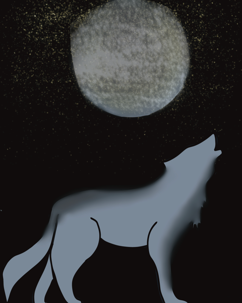

Me!
Hi there! I'm Kurookami, also known as CLFlix - creator of this website and KuroBot. I'm a second-year college student studying Applied Computer Science, and a fanatic osu! player.
Why?
After searching for a chatbot that does everything I personally want it to do, I couldn't find one. I wanted it to have commands like !np and !profile, but I didn't want to have 4 different bots running on my channel. Since I'm learning how to code in college, I got the idea to just make a bot of my own. I started out with a simple bot with commands like !np and !rank, totaling about 70 lines of code. After adding more commands and a points system, I now have a bot with over 1.000 lines of code. I'm enjoying every step of the way, making my bot just a little better and more advanced each time.
Tech Stack
This bot was completely coded in Python. It uses the Twitch API for things like checking if a Twitch user exists and adding VIP status to a user. The osu! API is also used to get a player's information to display the their current rank, playtime and more. The website was made with React and Next.js + Tailwind CSS.
Contribute
Developers:
KuroBot is fully open-source, meaning anyone can contribute to the project! You can do so by forking the GitHub repo and opening a pull request after making your desired changes.
Anyone else:
Even if you don't know how to code, you can still contribute to the project! On the GitHub repo, there's a Discussion page where you can submit suggestions for what YOU think the bot should be able to do. I'll be sure to check out every suggestion - just keep in mind that this is a side project and I have to put my main focus on college. If you find errors or bugs, you can report these in the Issues page.
